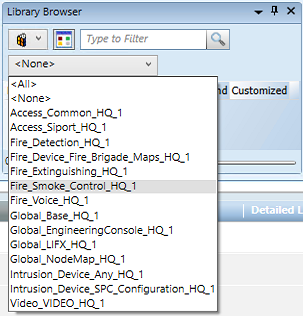
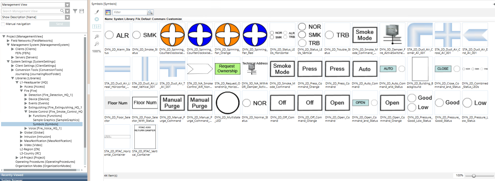

Configuring Smoke Control Symbols in Graphics
Scenario
You want to configure and control graphics representing Firefighters' Smoke Control Stations that show the status of associated devices and functions.
- You opened a graphic to edit in Engineering mode.
- You know how to create a graphical command.
- Import or create a background that represents a Control Panel or Geographic Zones. (campus, buildings, floors, etc.)
- In the Graphic Editor, in the View tab, select the Properties and Library Browser panes.
NOTE: You will not need the Element Tree, Depth, Evaluation Editor and other panes, which you can deselect. - In Library Browser, select the Fire_Smoke_Control_HQ_1 library.

- The smoke control symbols appear in the preview area of the pane.
NOTE: Adjust the zoom factor to 90% or more to better show the symbols. Just use the slider at the bottom right of the pane. - In the list, depending on the unit you want to represent, choose one of the symbols:
NOTE 1: Hover over the symbol preview to display the full name as a tooltip.
NOTE 2: If you want to change the colors of the symbols, use the Graphics Editor.
- Drag the desired symbol from the Library Browser into the graphic.
- In System Browser, select the Manual Navigation check box.
- Select Management View.
- In System Browser, locate and expand the fire device subtree.
NOTE: Use the scale factor if you need to resize icons. - Single LED indicator (can be inserted into a container symbol).
Following are examples of individual indicators and how to configure them: - Trouble Indicator symbol: Insert a status-only pseudo point to monitor faults of the functions in the Zeus configuration. Drag pseudo point into the TroublePseudo property text box.
- Alarm symbol: based on status propagation, colored according to the alarm category of the linked geographic node (e.g., if linked to a floor, the most severe event of the floor is displayed). Drag the parent node into Object Reference.
- Multiple LED indicator. Below are examples and how to configure them:
- Multiple Indicator symbol: Insert a status only pseudo points to monitor the status of the smoke control functions in the Zeus configuration. Drag pseudo points into NormalPseudo, SmokePseudo, TroublePseudo.
- Pressure Indicator symbol: Insert a status only pseudo points to monitor the status of the pressurize functions in the Zeus configuration. Drag pseudo points into PressureGoodPsuedo and PressureLowPseudo.
- Damper symbol. It represents the status of the open/closed state of the damper physical device using the inputs of the I/O device. Drag the two status inputs into the Closed Switch and Open Switch property text boxes.
- Link the status only pseudo point used in the Zeus configuration to the TroublePseudo textbox to visually indicate the fault of this device.
- Fan symbol. Dynamic symbol representing rotating fan,
- Fan symbol: Drag status only pseudo point configured in Zeus for monitoring the fan activation or the physical switch monitoring the fan into FanPseudo textbox. Fan symbols are blue or orange, spinning clockwise or counterclockwise.
- Ownership Symbol. Command to get ownership of the panels with smoke control function.
- Ownership Symbol: Create an ownership macro that uses all involved panels as scope and the request as command. Drag the ownership macro previously created with the request commands for the involved panels into the Target and select Command Trigger checkbox. In Command Name, select Execute.
- Building symbol. A container for the custom icon building representing the highest category event using the background color, example: green for no event and red for alarms.
- Building symbol. Configure the object reference text box with the geographic node of the building. Configure the Target section to navigate between buildings graphics. Green for no event.
NOTE: When Flex Client is used, a transparent rectangle is configured with a selection reference. This rectangle may be used to enable navigation. - Floor symbol. Used in the building graphics to directly open the floor graphics and to show the floors statuses.
- Floor symbol with status. Used in the building graphics to directly open the floor graphics and display the status of the floors. Configure the FloorNumber textbox with the floor number or name (it must be between “”). Configure the Object reference with the geographic node of the floor to display floor’s most severe event. Drag the node of the graphic of the floor. Green for no event.
To navigate through the graphic, drag and drop the target graphic into the Selection Reference property of the symbol.
NOTE 1: When Flex Client is used, a transparent rectangle is configured with a selection reference. This rectangle may be used to enable navigation.
NOTE 2: In multimonitor configuration, you can configure floor graphics with function FloorGraphic (in their Object Configurator) and configure the Flex Client display rules to always open the floors in separate monitor (not building monitor). - Panel symbol. Used in the building graphics to display the status of the panel. Used to show the color of the highest priority event on the panel.
- Panel symbol with status. In Field Network, drag the panel into Object Reference to show the color of the highest priority event on the panel. No background if this panel is normal.
- Command and status symbols that work by configuring the corresponding pseudo point (without reading it but commanding it). Following an example.
- Purge command. In Command and Navigation, drag the PurgePseudo into Target and select Execute.
- Purge Status. Drag status only pseudo point inserted in Zeus purge function to monitor its status in PurgePseudo substitution text box.
NOTE: Command and status symbols are available with default backgrounds. The backgrounds of all symbols can be changed by editing the symbols, see Graphics Editor. - From the Home tab of the graphic editor, add any connection lines or additional graphic elements as necessary.
- Click Save
 to save the graphic.
to save the graphic. - Repeat this procedure to add more smoke control symbols as necessary.
- In System Browser, deselect the Manual Navigation check box.